Fixing GTA IV with 4 Mods on Steam Deck
Warning
This guide is only for The Complete Edition of Grand Theft Auto: IV. If you're playing on an older version, this guide won't work.
This guide is only for Steam Deck/Linux! If you're playing on Windows, I have a seperate guide for that which you can find here.
Introduction#
I’ve seen a lot of people say that GTA IV is fine to play on Steam Deck out of the box because the performance is acceptable, but what I don’t think most people realize, is that there’s a lot more wrong with GTA IV’s PC version than just the performance.
There’s a lot of missing graphical effects, broken effects, poor asset changes and worst of all, the game doesn’t have Steam Deck button icons by default, disgraceful! So let’s fix this!
This guide is also available in video form if you'd prefer to follow that instead.
Prerequisites#
Everything in this guide will be done directly on the Steam Deck, you don’t have to connect your Steam Deck to a PC and you don't need any other hardware.
We also won’t be leaving any files lying around once we’re done, so if you’re worried about cluttering your system, don’t be.
To follow this guide, you’ll need to know how to access the desktop on your Steam Deck, how to control the desktop and how to locate your GTA IV folder on your Steam Deck, so let's start with that.
Accessing the Desktop on Steam Deck#
To access the desktop on your Steam Deck, hold the Power Button to bring up the power menu and then and select Enter Desktop.
Controls on the Steam Deck Desktop#
Once you’ve reached the desktop, you need to know how the controls work.
Right Touchpad / Right Analogue Stick— Controls the mouse cursor.Left Touchpad— Controls scrolling (vertical and horizontal).Right Trigger— Acts as a left click. Double-click to open items.Left Trigger— Acts as a right click (opens context menus).
Useful hotkeys:
Steam Button + X— Opens the on-screen keyboard when a text box is selected.
Finding Game Files on the Steam Deck#
Before we begin, we need to find our game files and also create a link to it on our desktop. This is also a good time to learn the desktop controls.
- Launch the Steam application while on your desktop, locate
Grand Theft Auto IV: The Complete Editionin your Steam Library, press theLeft Triggeron the game to open the context menu, go toManageand then clickBrowse Local Files. -
Once the game folder appears, go to the address bar at the top, press
Right Triggerat the end of it, then holdRight Triggerand move the mouse across the address bar using theRight Touchpad / Right Analogue Stickto highlight the folder location. Once highlighted, pressLeft Triggerto open the context menu and then clickCopy.If you're not sure how to do this, check this little video below.
-
Once you've copied the address bar, open the
GTAIVfolder and then minimize the folder by pressing the down arrow in the top right, we'll go back to this folder later. - Press
Left Triggeron the desktop to open the context menu, go toCreate Newand then clickLink to File or Directory… - In this new window, go to the second box for
File or directory to link to:, pressLeft Triggerand then clickPasteto paste the address we copied. - In the
Name for new linkbox, remove all text (PressRight Triggeron the box and then useSteam Button + Xto open the keyboard) and then type “Grand Theft Auto IV”. Once done, pressOK.
You should now have a link to your GTA IV folder on your desktop, which should be named Grand Theft Auto IV, we’ll need this later.
Using the browser (Firefox) and File Explorer (Dolphin)#
To view webpages and download mods, you should use Firefox, the default browser on the Steam Deck desktop, you can find it pinned on the taskbar at the bottom. I'd recommend using Firefox to open this guide on your Steam Deck so you can quickly access the download links to the mods in this guide.
To view and install the mods, you should use Dolphin, the default file explorer on the Steam Deck desktop.
Both can be found on the taskbar at the bottom of your screen.
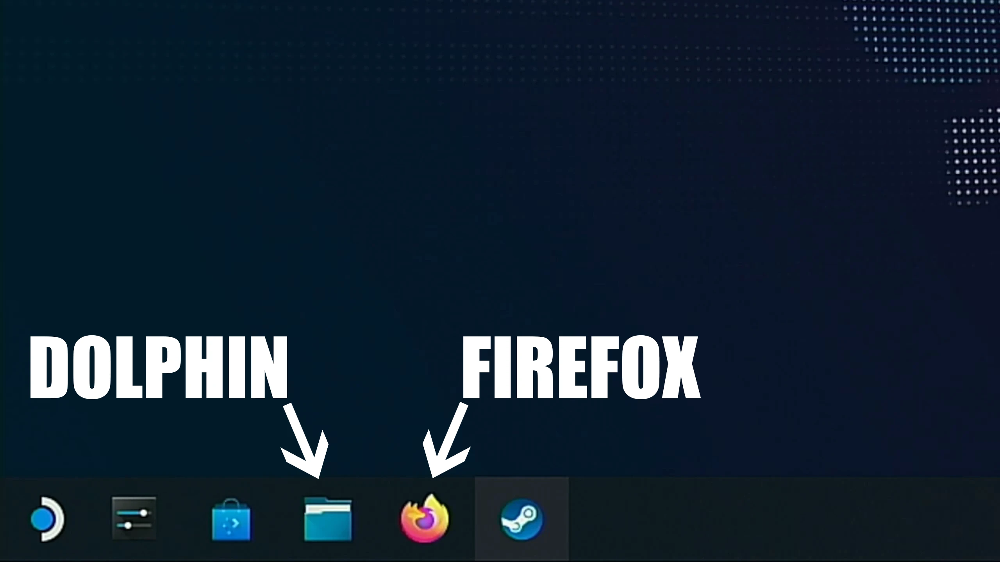
Fusion Fix#
So the first mod we'll install is Fusion Fix.
If you don't know, Fusion Fix is basically the mod which fixes most of GTA IV's issues. The game is broken in so many ways on PC compared to the console versions that it's actually hard to believe.
Fusion Fix adds many new faithful graphical effects, a TON of quality-of-life features which brings the game up to a more modern standard, fixes hundreds of bugs including high-FPS bugs, adds many new options and overall just massively improves the experience.
Highlights#
I won't cover all of things Fusion Fix does in this guide, but I will go over some of the highlights of the mod so you'll know what you're in for.
If you want to view everything Fusion Fix does, check out my Fusion Fix Wiki which covers all of the mods features and changes.
If you just want to skip the highlights and go straight to installing the mod, you can click here, otherwise keep scrolling.
Rain#
Rain on PC was made almost invisible, rain streaks became shorter at higher frame rates and rain droplets on screen became pitch black and lost their refraction effect from console.
Fusion Fix makes rain much more visible, fixes rain streaks so they stay the same size regardless of frame rate and it makes rain droplets coloured again, as well as restoring the refraction effect.


Reflections#
Reflections were toned down significantly on PC, vehicle reflections became jagged due to a bug and mirror reflections became distorted at certain camera angles.
Fusion Fix restores the stronger console reflections, fixes the bug which made vehicle reflections jagged, and it fixes mirrors so they no longer become distorted at certain camera angles.


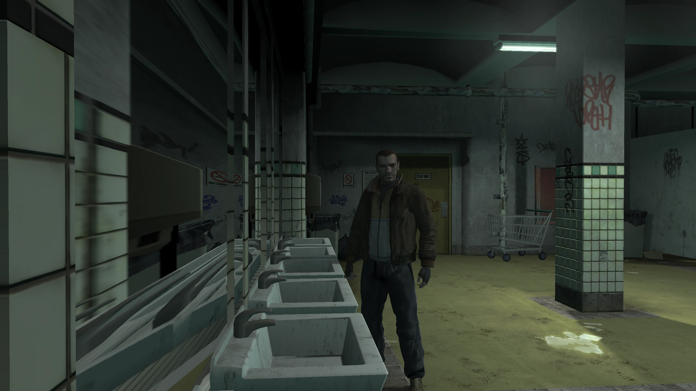

Shadows#
Shadows were by far the most broken aspect of the game
After patch 1.0.6.0, they had horrible filtering, suffered from peter panning, had their draw distance reduced, performed significantly worse than the original shadows implementation and had many other issues.
Fusion Fix completely replaces the filtering and bias code, adds support for animated tree shadows, adds contact hardening shadows and it also fixes dozens of other bugs related to shadows in general.

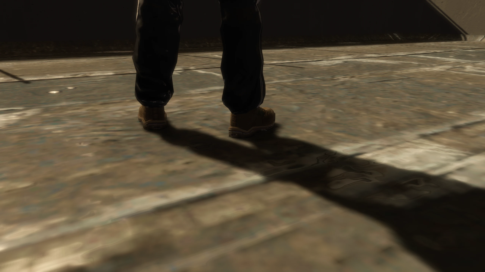


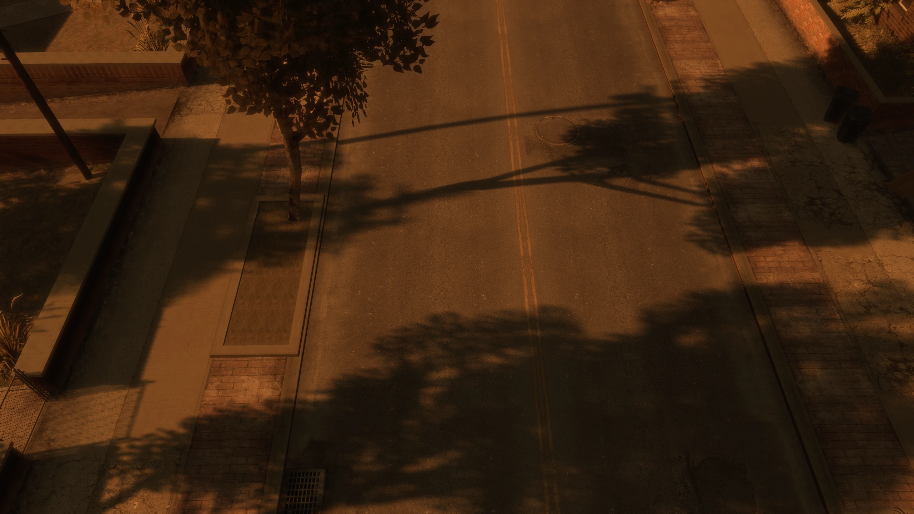
Z-Fighting#
The PC port of Grand Theft Auto IV was plagued with z-fighting not seen on other platforms.
Fusion Fix fixes this so z-fighting is basically nonexistent.
Depth-of-Field#
GTA IV's depth of field effect doesn't scale correctly with resolution and it only looks correct at 720p like on consoles. Depth of field is also tied to the games "Definition" option.
Fusion Fix fixes the scaling by implementing an efficient bokeh blur rated up to 4K, and added an individual depth of field option separate from the "Definition" option. This allows you to not only toggle depth of field, but also control how strong it is during gameplay.

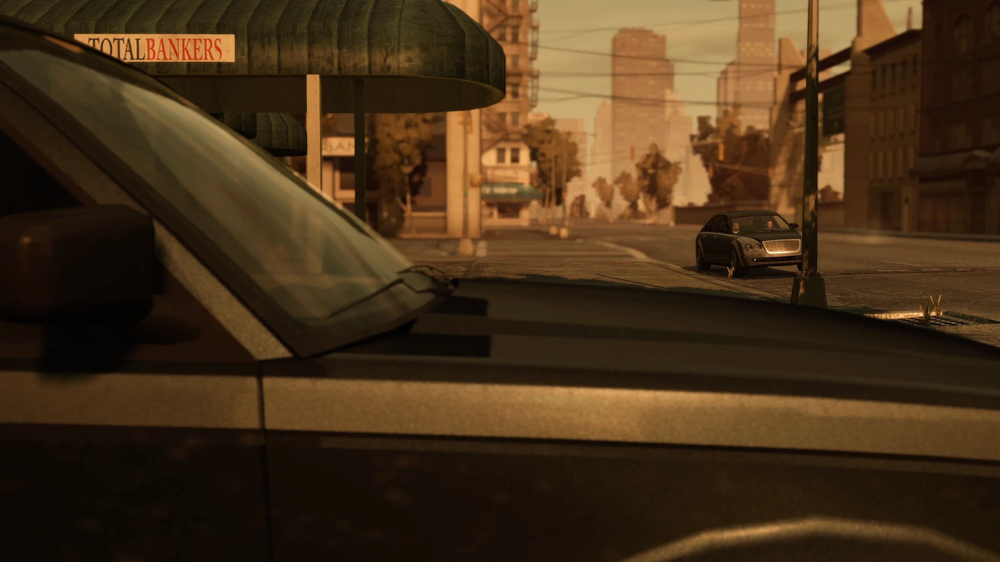
Anti-Aliasing#
The Xbox 360 version of GTA IV ran at 1280x720 with 2x MSAA. Meanwhile the PC version lacked any anti-aliasing whatsoever.
Fusion Fix implements FXAA and SMAA, which are simple and performance friendly, and do an excellent job at smoothing out jagged edges, especially at high resolutions.

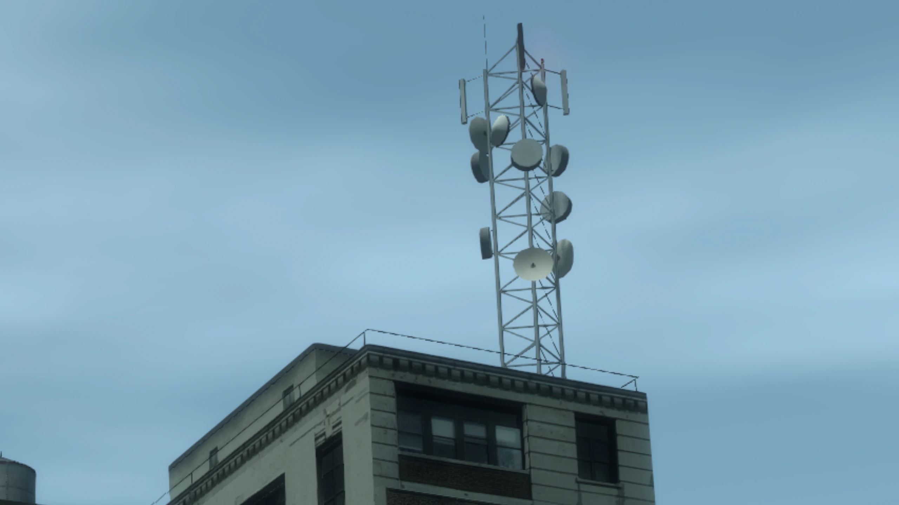
Volumetric Fog#
Fusion Fix adds a very nice volumetric fog shader to replace the games aging fog shader. This allows the draw distance to be massively increased, it hides the edge of the game world and fog no longer moves with the camera like it did in the vanilla game.
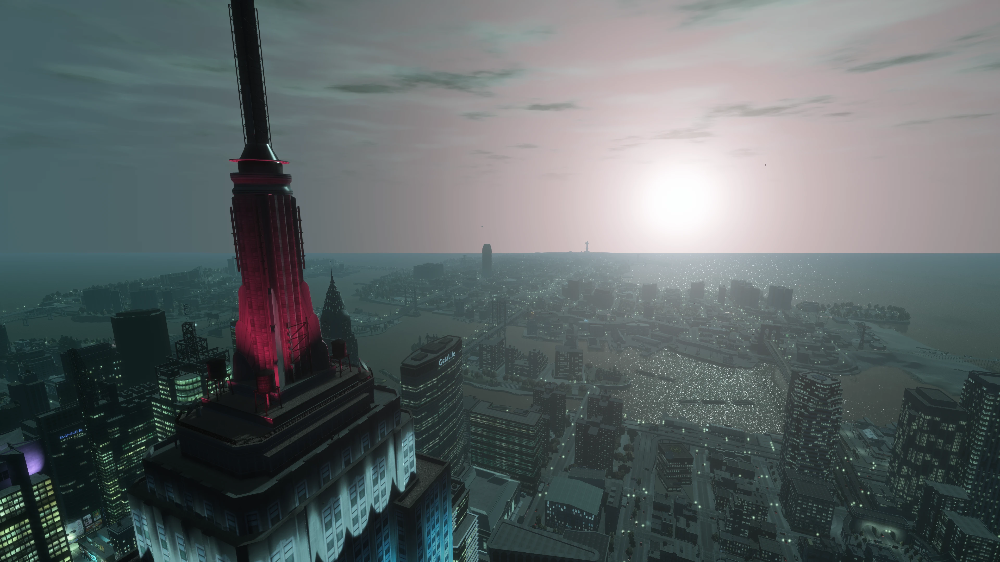

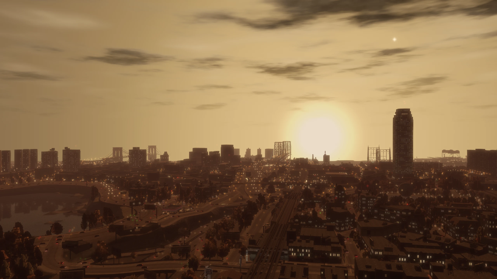
Sun Shafts#
The sun in GTA IV is pretty effectless in comparison to every other 3D GTA game. So Fusion Fix adds an option for sun shafts/godrays, a nice effect that simulates light rays coming from the sun.


Improved Loading Times#
GTA IV on PC has an unskippable intro and it takes you to a main menu first instead of just loading your last save immediately like console.
Fusion Fix adds a skip intro and skip menu option in the GAME menu, as well as improving overall load times. This significantly reduces how long it takes to get in-game.
Seasonal Events#
Fusion Fix adds seasonal events to the game which includes snow at winter and a scarier atmosphere at Halloween. The snow effect is done almost entirely using shaders instead of replacing map textures, similar to GTA Online's yearly snow event. You can toggle this feature in the GAME menu.


Fusion Overloader#
Fusion Fix adds a type of Modloader called Fusion OverLoader, you don’t really need to know too much about it for this guide. But if you do plan on installing more mods in the future, I’d recommend checking out my Fusion Overloader tutorial once you're done with this guide.
We'll be installing all our mods through Fusion Overloader in this guide, so you'll see how easy it is soon.
Even more...#
If you want to know what else Fusion Fix fixes or adds to the game, you can either check out the full changelog on the Fusion Fix GitHub or you can watch my video covering nearly the entirety of the mod.
Download & Installation#
- Download the latest Fusion Fix .zip from the official GitHub release page (found under
Assets). Do not download the legacy addon or installers, they're not needed. - Open the archive you just downloaded, open the
GTAIVfolder you minimized earlier and then copy and paste everything from the archive into your game folder whereGTAIV.exeis located.
Fusion Fix is installed, BUT we need to tell Proton (the compatibility layer that let's us run Windows games on Linux) to load the ASI loader (dinput8.dll) that comes with Fusion Fix.
- Launch the Steam application while on your desktop, locate
Grand Theft Auto IV: The Complete Editionin your Steam Library, press theLeft Triggeron the game to open the context menu and pressRight TriggeronProperties... - In
General, go toLaunch Optionsand in the text box enterWINEDLLOVERRIDES="dinput8=n,b" %command%". You can then close theProperties...window.
That's it, Fusion Fix is now installed on your Steam Deck. Don't worry, that's about as complicated as this guide gets, everything else is easy.
Console Visuals#
Our next mod to install is Console Visuals.
The PC version of GTA IV changed quite a few of the games assets, so they're different than console. Things like certain clothing options, animations and other things were different between the two versions.
The mod Console Visuals aims to restore all of that content from console. Most of the changes are completely subjective, they’re just small things such as...
The way Niko might hold a specific weapon...
.webp)
.webp)
Or the size of the games help boxes...


But Console Visuals does come with one change which is definitely an improvement over the PC version, and that’s the vegetation.
On PC, a lot of the vegetation was changed, this includes a new grass model, which is actually worse because it's offset too low which causes the bottom half of the grass to be pushed under the ground.
Just look at this comparison here, the grass on PC is mostly under the ground compared to the console grass.
.webp)
.webp)
As well as restoring the console grass, it also restores the console trees. However, the trees in Console Visuals have higher resolution textures compared to console, because as it turns out, Rockstar reused these tree textures in Max Payne 3 at a higher resolution.
The team behind Console Visuals managed to extract those textures and got them into GTA IV with some corrections made to them.
.webp)
.webp)
.webp)
.webp)
.webp)
.webp)
Download & Installation#
For this guide we'll just install the vegetation improvements from Console Visuals, as it's the one thing that I'd argue isn't really subjective compared to the other changes between console and PC.
If you want to install the other console assets from Console Visuals, have a look at my Console Visuals Wiki, this will show you all of the different Console Visual assets and how to install them.
But like I said, console vegetation is arguably better in every aspect, so we'll just install that for this guide.
- Download the latest
Console.Vegetation.zipfrom the official Console Visuals GitHub release page (found underAssets). - Open the archive you just downloaded and then copy and paste the
updatefolder from the archive, into yourGTAIVfolder, whereGTAIV.exeis located.
And that’s it, the vegetation from Console Visuals is installed!
Various Fixes#
The penultimate mod we’re going to install is Various Fixes. This mod fixes a huge number of texture issues, prop placement issues and other problems and inconsistencies throughout GTA IV's assets.
It’s hard to even cover everything this mod fixes as the list of fixes is VERY big. However, I'll give you three quick examples so you can get an idea of what this mod is about.
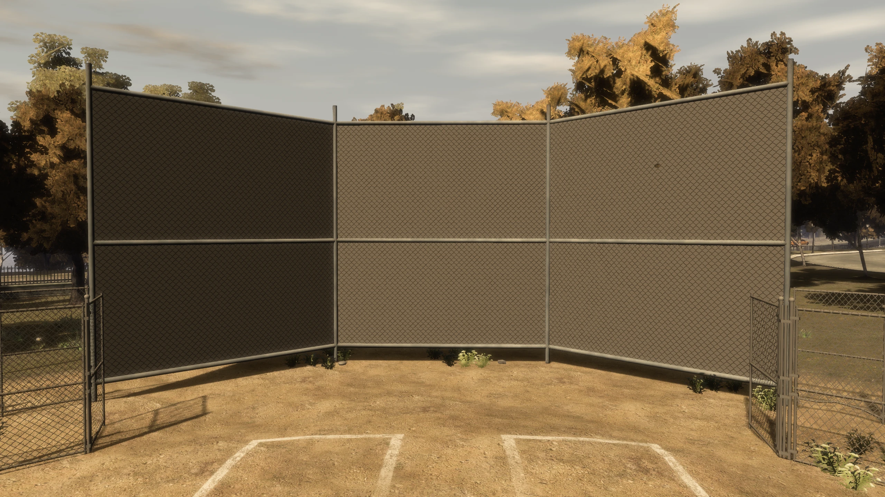
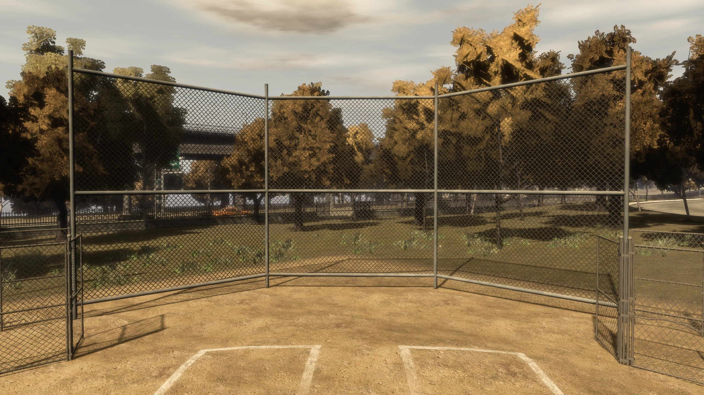
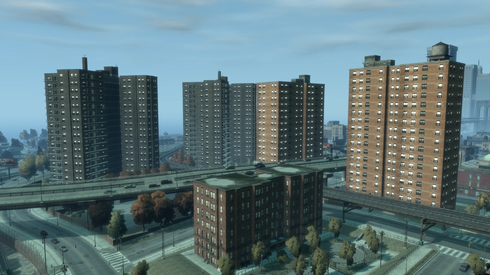
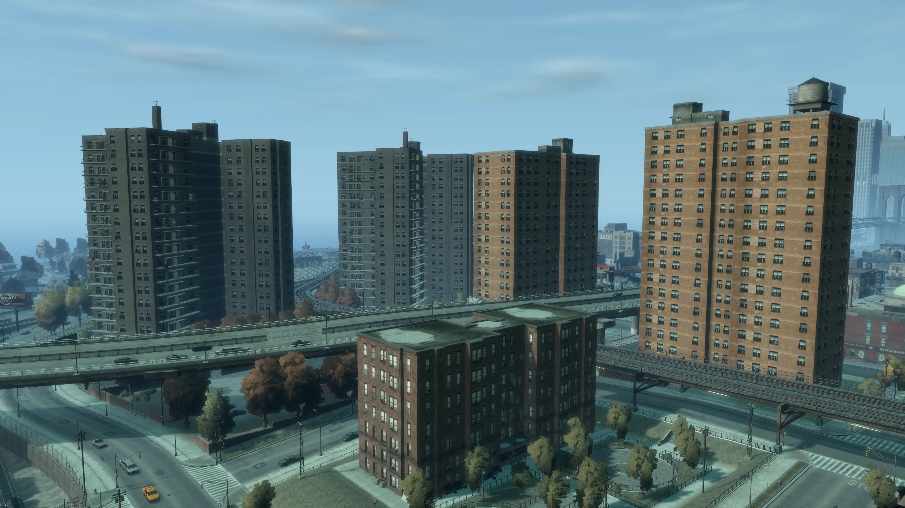
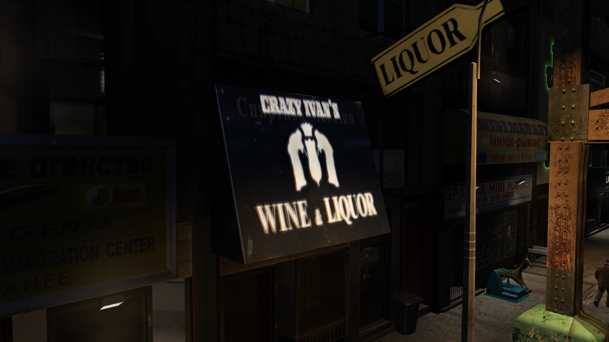
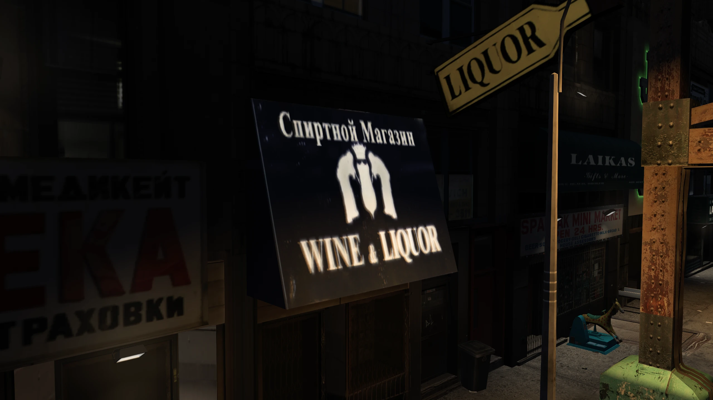
Download and Installation#
Okay let's download and install Various Fixes.
- Download the latest
Installation.through.Fusion.Overloader.zipfrom the official Various Fixes GitHub release page (found underAssets). - Open the archive you just downloaded, open the
Installation through Fusion Overloaderfolder in the archive and then copy and paste theupdatefolder from that folder, into yourGTAIVfolder, whereGTAIV.exeis located.
Radio Restoration#
Like all of the other old GTA titles, GTA IV has had music removed due to licenses expiring.
The radio station Vladivostok, lost all of its original songs except one when licensing expired in 2018, so Rockstar added a whole new soundtrack to the station instead, other radio stations also lost some songs too.
The best mod to restore cut music from the Complete Edition of GTA IV, is the Radio Restoration mod, so we're going to use that in this guide.
Download and Installation#
- Download the latest
Radio.Restoration.Mod.zipfrom the official Radio Restoration GitHub release page (found underAssets). - Open the archive you just downloaded and copy the
IVCERadioRestoration.exeandResourcesfolder from the archive to your desktop. - Launch the Steam application while on your desktop, click
Add a gameon the bottom left, clickAdd a Non-Steam game..., clickBrowse..., clickDesktopand then selectIVCERadioRestoration.exe, clickOpenand then clickAdd Selected Programs. -
Locate
IVCERadioRestoration.exein your Steam library, select it, then on the right side (opposite side of thePLAYbutton), select the🎮controller icon and then in the controller settings page, make sure theCurrent Button Layoutuses the templateMouse Only. Once it's set, you can close this page.It should look like this...
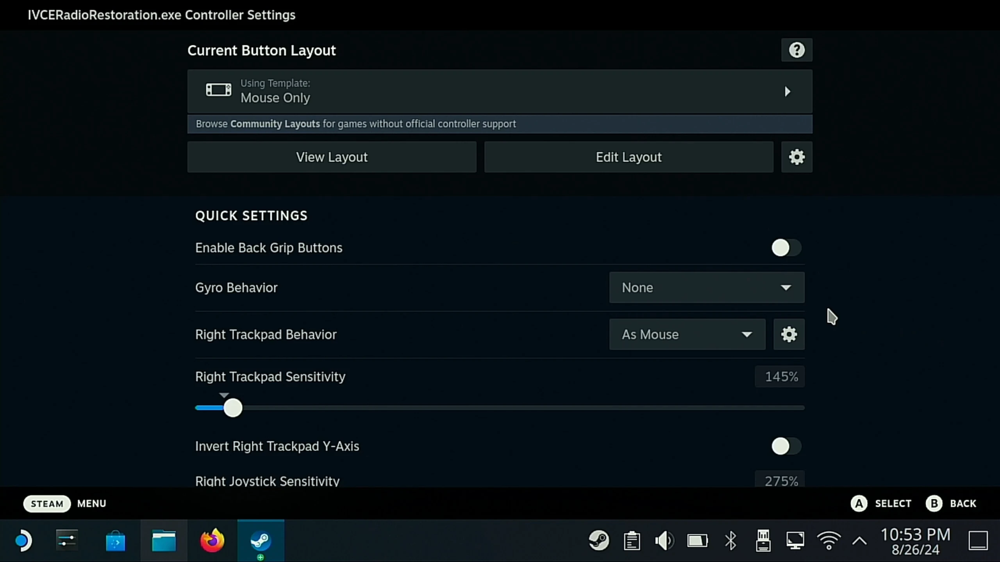
-
Go back to your Steam Library, press the
Left TriggeronIVCERadioRestoration.exeto open the context menu, click onProperties..., click onCompatibilityand then make sure the box is ticked next toForce the use of a specific Steam Play compatibility tool. - Once again go back to your Steam Library, locate
IVCERadioRestoration.exeand press thePLAYbutton to launch the application. ClickNext >to begin the installation and then clickNexton the next page. On theChoose Componentsscreen, you can customise the mod to your liking, clicking on a component will give you a description on the right-hand side. You already have Fusion Fix installed, so you don't need to select that. Once you've selected what you want, clickNext >. - On the
Choose Install Locationpage, clickBrowse..., click the+icon next to the/drive to expand it, then expand thehomefolder, then thedeckfolder, then theDesktopfolder, then theGrand Theft Auto IVfolder, then click on theGTAIVfolder (don't expand it, select the folder itself), clickOK, clickInstalland then clickFinishonce the installer is finished.
You've now restored the music cut from GTA IV!
Clean Up#
Once you're done, you might want to clean up anything you've downloaded or created throughout this guide. It's not necessary, but many people don't like cluttering their Steam Deck with unnecessary files.
- Go back to your Steam Library, press the
Left TriggeronIVCERadioRestoration.exeto open the context menu, go toManageand then click onRemove non-Steam game from your library. - Go back to your desktop, press the
Left Triggeron theGrand Theft Auto IVfolder to open the context menu and then click onMove to Trash. - Go back to Firefox, click the menu button on the top right (the one that's 3 vertical lines stacked on top of each other), click on
Downloadsand then clickClear Downloads. - Go back to Dolphin (the file explorer on this version of Linux), click the
Downloadsfolder, pressRight Triggerin an empty space within the downloads folder and move the mouse across all of the items in the folder by using theRight Touchpad / Right Analogue Stick. Once everything in the folder is highlighted, pressLeft Triggeron any of the highlighted items to open the context menu and then click onMove to Trash. Open theTrashfolder on the left hand side menu, clickEmpty Trashand then click onEmpty Trashagain.
You've now cleaned up everything you downloaded.
Outro and Additional Links#
And that's it, you now have the BEST version of GTA IV right on your Steam Deck!
If you'd like to learn more about Fusion Overloader, the modloader that comes with Fusion Fix, make sure to check out my Fusion Overloader Tutorial.
Enjoy my work?
Gain benefits such as shout-outs at the end of videos, early access to TJGM videos, early access to TJGM mods, VIP Discord access and much more by supporting me and my work on Patreon, it's very much appreciated! ❤️
⭐ Support on Patreon